|
METEOROLOGICAL ACUMEN (October 10, 2024)
THE FOLLOWING LINES SHOULD ALLOW YOU TO RATE THE RECENT GULF OF MEXICO STORM (MILTON) ON THE SAFFIR-SIMPSON SCALE.
Note: the News have reported the storm as a Category 5, then 4, then 3 major hurricane. The News did not specify the manner in which they had measured wind speeds, before and after landfall.
USING THE TOOLS OFFERED BELOW, YOU ARE INVITED TO PROPOSE YOUR OWN EVALUATION HERE:
SIMPLE TOOLS TO HELP YOU DEMONSTRATE YOUR ACUMEN: Disclaimer: please note that even the storms in the lower rungs (TD and TS) are very destructive meteorological events. Also note that the physical effects of the wind go more or less like the square of its speed.
1. THE SAFFIR-SIMPSON SCALE 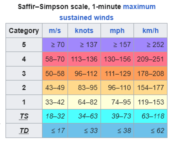 TD: Tropical depression TS: Tropical storm
2. NOAA (NATIONAL OCEANOGRAPHIC AND ATMOSPHERIC ADMINISTRATION) HAS 1,343 WEATHER STATIONS deployed along the shores of the United States, of which 1,030 have reported online in the past 8 hours. See observations at the bottom of this page. 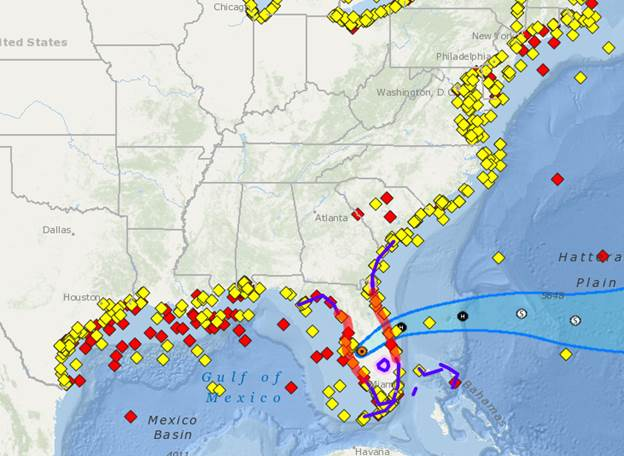
3. AIRPORT STATIONS: the weather in tens of thousands of airports around the globe is continuously accessible online in real time. 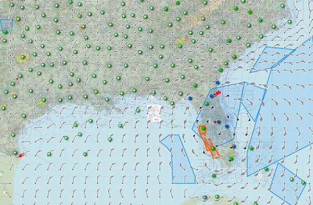
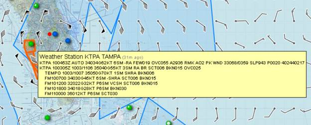
4. AREA OF INTEREST 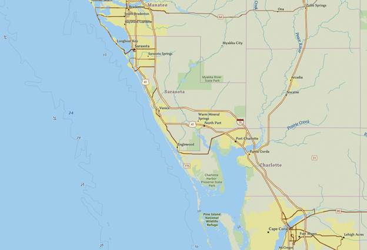
5. AT LANDFALL: GFS PREDICTION MAXIMUM WIND 67 KNOTS 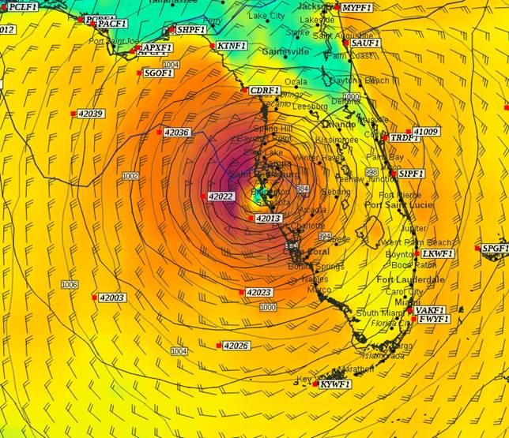
6. OCTOBER 9, AFTERNOON, ECMWF PREDICTION 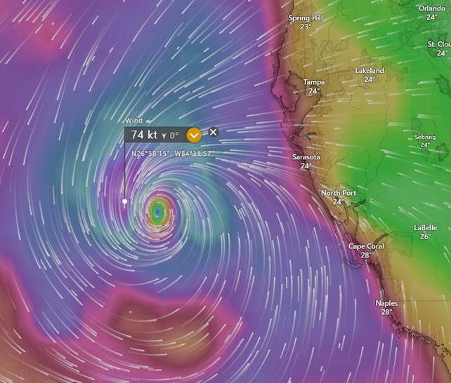
7. OCTOBER 9, NIGHT, GFS PREDICTION 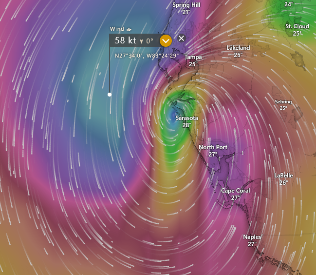
8. FIVE METEOROLOGICAL MODELS, ALL MORE OR LESS IN ACCORDANCE Note: since the storm first appeared in predictions a few days prior to landfall, not a single one of the five models had predicted anything above the TS to 1 level. 9. VENICE AIRPORT, OBSERVED WIND 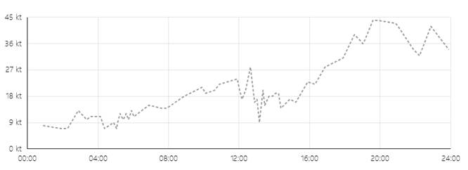 10. ACTUAL WIND OBSERVED AT VARIOUS NOAA STATIONS (maximum sustained wind in blue, gusts in red) a. SARASOTA 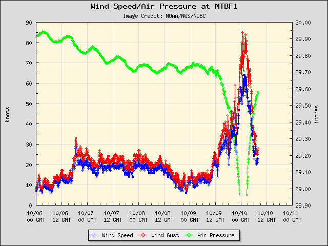
b. SARASOTA 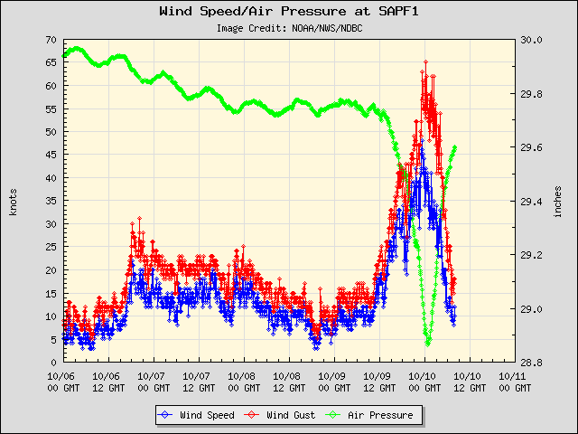
c. FORT MYERS 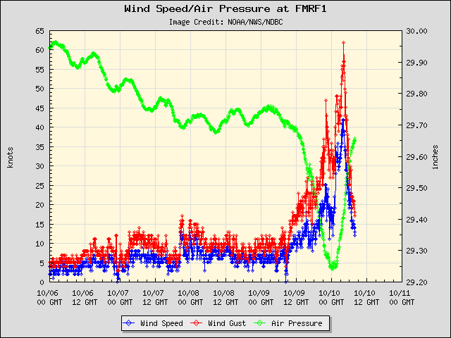
|